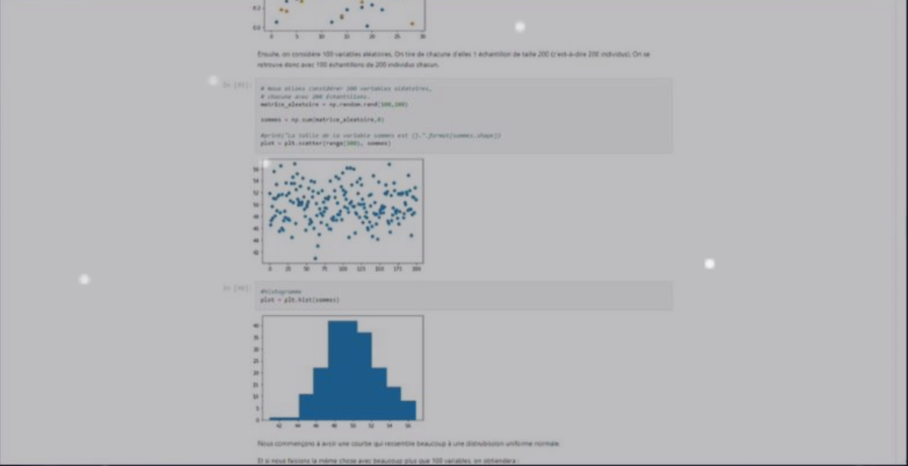

Mes projets

Projet java "Ardoise Magique"
voir le code sourceAnalyser et définir les fonctionnalités clés de l’ardoise
Utiliser des classes abstract,
héritage et interface en java
Manipuler Eclipse(logiciel)
Planifier et organiser le travail en équip

Site du musé Philarmonie de Paris
voir le code sourceUtiliser HTML, CSS et JavaScript pour coder les pages du site web
Réaliser la maquette du site sur Figma
Maîtriser le git en ligne de commande et par l’application
Desktop
S’entraider en sein de l’équipe

Projet Python : Algo de Brélaz
voir le code sourceCréation d'une application Python utilisant l'algorithme Brélaz pour le coloriage de graphes, illustrant des concepts complexes en algorithmique. Utilisation de Python, Numpy, Matplotlib, Seaborn, Pandas, et SciPy.